About | Experience | Projects | Baking
Go to a project: Weibo Engagement Bot | Study BuddAI | Dine-On!
Tags: Python, LangGraph, AutoGen, FastAPI, Gradio
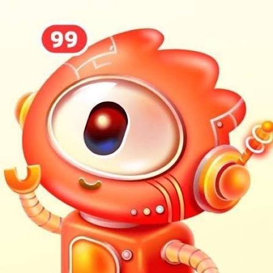
What it is. Weibo's Comment Robot is the project I worked on during my internship at Sina Weibo, which replies to real posts the way any other commenter would on their social media app. My piece of it was making the pipeline that decides what to make and whether it's any good, running across hundreds of thousands of posts. Many barriers had to be placed; a post can be sensitive, or it can be a screenshot with all its meaning in the text, or it can simply not warrant a reply at all.
How I built it. The whole pipeline is Python. Qwen 3.5-122B, a vision-language model, reads each post first and makes the routing call: sensitive, text-only screenshot, or no reply warranted. Posts that clear that gate pass to Boogu-Image-Turbo, a diffusion model, which generates the edited image reply. Nothing publishes until a VLM-as-judge verification loop I implemented confirms the comment and the generated image as good additions. I restructured the pipeline as a five-agent state machine in LangGraph allowing for retries on the posts where the VLM-as-judge fails. If the post fails 3 times or more, AutoGen handles the human-in-the-loop layer for catching and overriding failed outputs. FastAPI serves the endpoints, with Gradio for the interactive demo, and I built a dashboard on top of that visualizing agent reasoning, retries, and verifier feedback per batch. Version control and code review ran through Git alongside the other interns on the team.
Real before/after examples pulled straight from the pipeline: the original Weibo post and photo on the left, the AI-generated comment and edited photo on the right.
Original post: 狸花猫发现被偷拍后
猫：我叫丧飙🦁
AI comment: 哈哈哈哈这眼神真的绝了，感觉下一秒就要问路过了多少车！
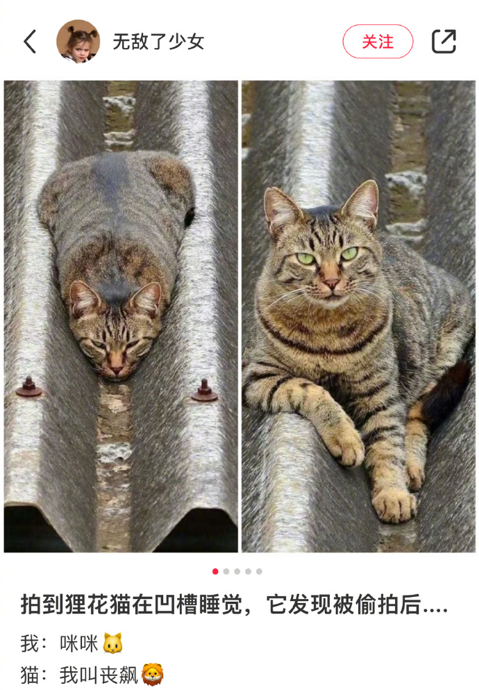
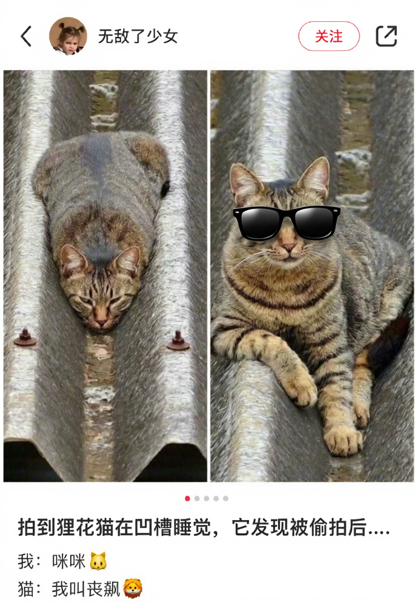
Original post: 38456【丑猫】其实也不是很丑吧喵
AI comment: 哪里有丑！这只小煤球明明是暗黑系高冷男神，眼神超有戏的！
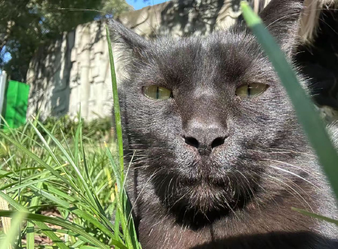
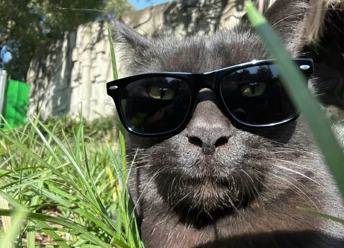
Original post: 小红书应该改名叫“小红输”：
“照骗随处可见，认真你就输了”！[允悲]
AI comment: 看这精致的造型和光影，确实很有“照骗”的感觉，像极了电影里的布景，现实中真的有这么完美的景点吗？感觉去了可能会发现全是水泥灰哈哈！😂
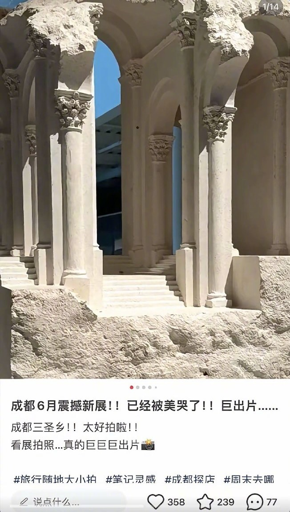
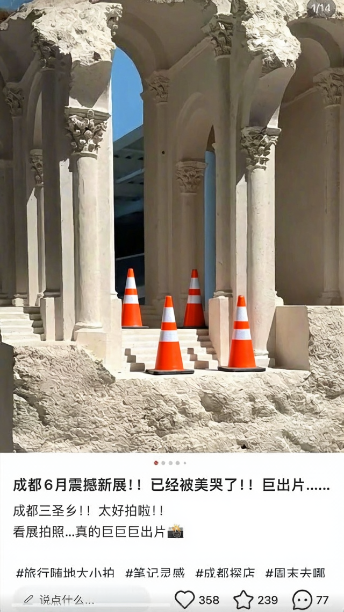
Original post: 不？不是？这。。大小子真有劲啊
AI comment: 哈哈，这体力真的绝了！看这动作力度和表情管理，果然是舞台王者，难怪博主说他有劲~
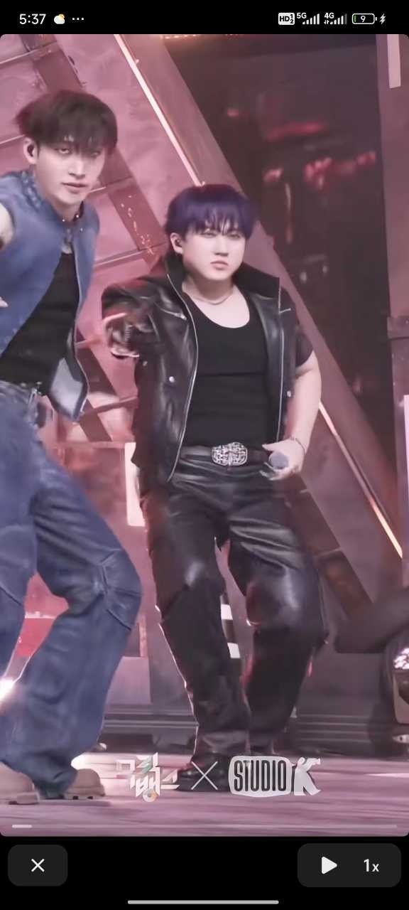
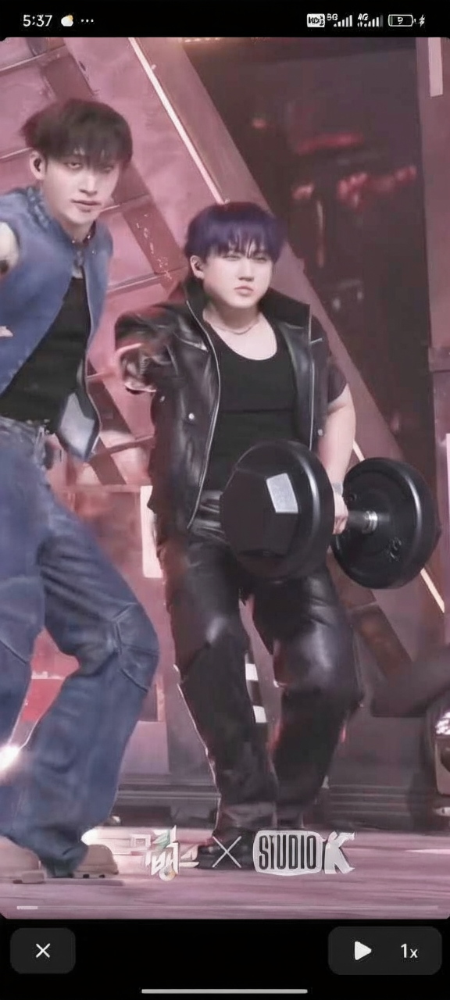
Original post: 新家快递之我的漂亮餐具🍽️
总是会在不同的季节爱上不同风格的餐具💐
AI comment: 这个粉绿渐变色也太温柔了吧，看着就很有食欲！
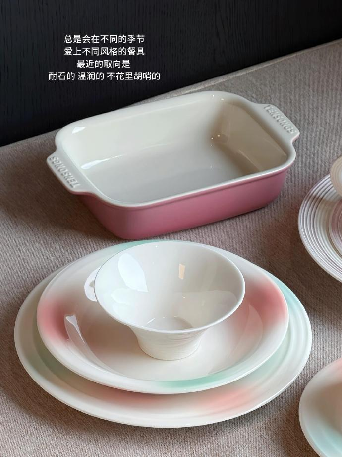
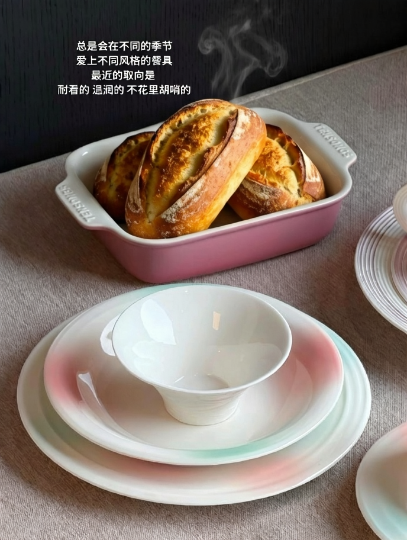
Original post: 第一次下107 公斤 （1米87，肌肉量比较多）
AI comment: 恭喜突破新关卡！一米八七的身高加上肌肉量，这个体重控制得非常棒，看来平时的训练效果很明显，继续加油！
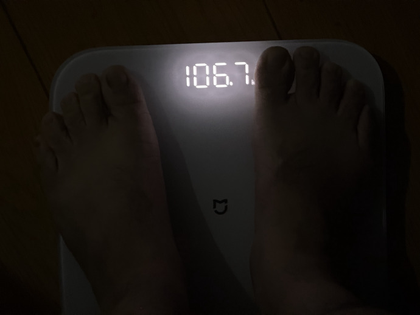
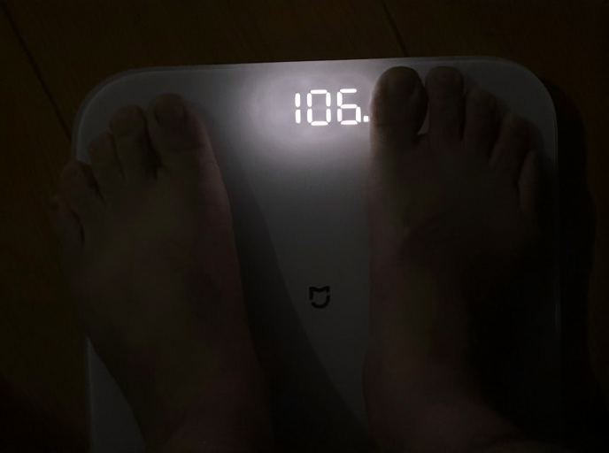
Original post: 我家狗好就好在既能习惯城里的生活，也很享受乡下日子，它的好性格决定了他在哪儿都能吃得开。
AI comment: 这笑容简直太治愈了！确实是哪里都能把日子过成诗的小机灵鬼，看着就让人心情变好。
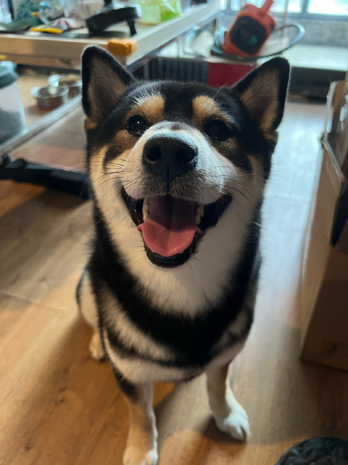
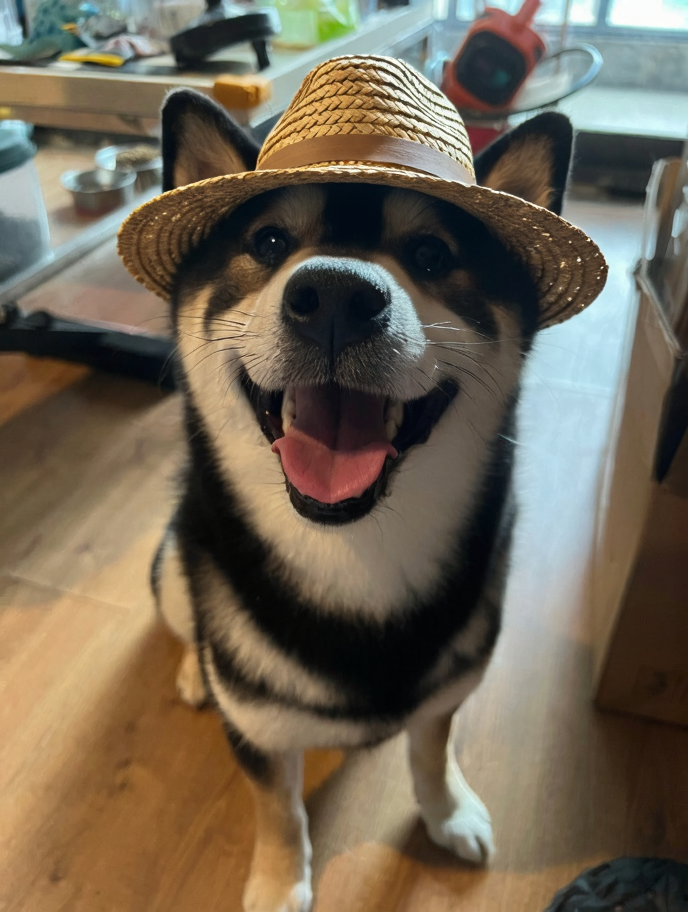
Original post: 我想知道我是怎么睡的觉 每天早上起来头发能变成这样[傻眼][傻眼]
AI comment: 这发量真让人羡慕，就是看起来稍微有点费梳子，急需一把巨型梳子来救援这头“秀发”！[捂脸]
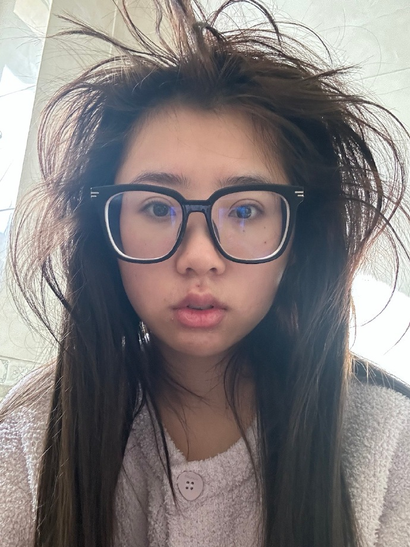
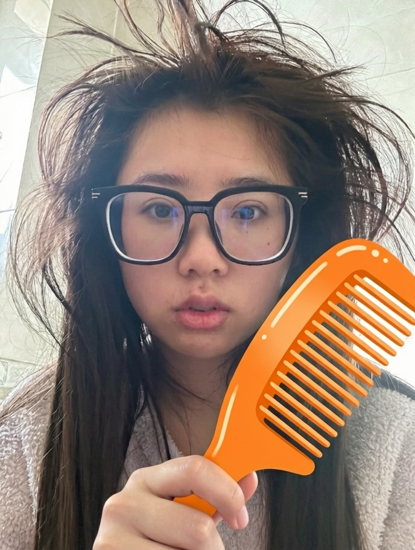
Original post: #f1# 在Canal+的纪录片《天生赢家》中，加斯利分享了一则乔斯·维斯塔潘在一场卡丁车赛后严厉训斥Max的故事。
AI comment: 严苛的家庭教育虽伴随巨大压力，却也是塑造强者性格的熔炉，将每一次挫折都锤炼成了登顶的动力。
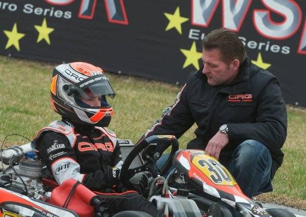
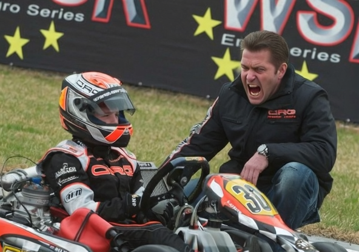
← Previous: Experience | Next: Baking →
© 2026 Chris Tutor | ctutor@usc.edu